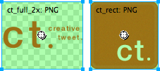
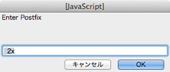
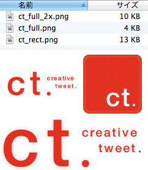

これは何？
Fireworksでオブジェクトを拡大し、高解像度デバイス向けの画像の書き出しを行う拡張機能です。@1x画像の解像度を2倍にした上で、@2xとして書き出します。@1xと@2xを同時に書き出せます。
動作環境とライセンス
Fireworks CS3以上 / MITライセンス
使い方
高解像度で書き出したいスライスの名前に、任意の接尾辞を付けます（コマンド実行時のデフォルトは「_2x」です）。図では、左の画像に接尾辞を付けました。

スクリプトを実行します。最初に接尾辞の入力を促されますので、任意の接尾辞にした場合は入力してください。

「書き出しダイアログ」は、高解像度で書き出すスライスがあれば2回、そうでなければ1回表示されます。最初の書き出しダイアログは@1x、2回のダイアログが表示されれば@2xになります（旧バージョンと逆になりました）。書き出しするスライスが選択された状態になっていますので、設定を変更しお好きなフォルダへ書き出ししてください。
接尾辞を付けたスライスのみ、@2xの画像が書き出されました。

既知のバグ / 仕様
- 解像度を倍にして書き出す性質上、ビットマップの画質は大幅に落ちます。シンボル化したビットマップを、50%の大きさで使えば回避できます。
- テクスチャは拡大されません。
- マスターページやオブジェクトを複数のページで共有している場合、リンクを切る動作を行わないため、オリジナルに影響を及ぼします。別ファイルとして実行するか、ページを複製してリンクを切ってください。
履歴
- 2.0.0［2013.4.30］
- Photoshopライブエフェクトのスケールに対応。
- @2xの書き出し画像名に、接尾辞を付加。
- 1.1.0［2013.4.16］
- mxp形式を追加
- 1.1.0［2013.2.1］
- 書き出しオプションのデフォルトを、「書き出し：画像のみ」に、「ページ」オプションのチェックボックスを「選択したスライスのみ」だけに変更。
- 1.0.1［2012.12.7］
- レイヤーが3つ以上ある場合にうまく動作しない不具合を修正。
- スライス名が設定されていない場合、エラーが出てしまう不具合を修正。
- 1.0.0［2012.12.7］
- 初リリース